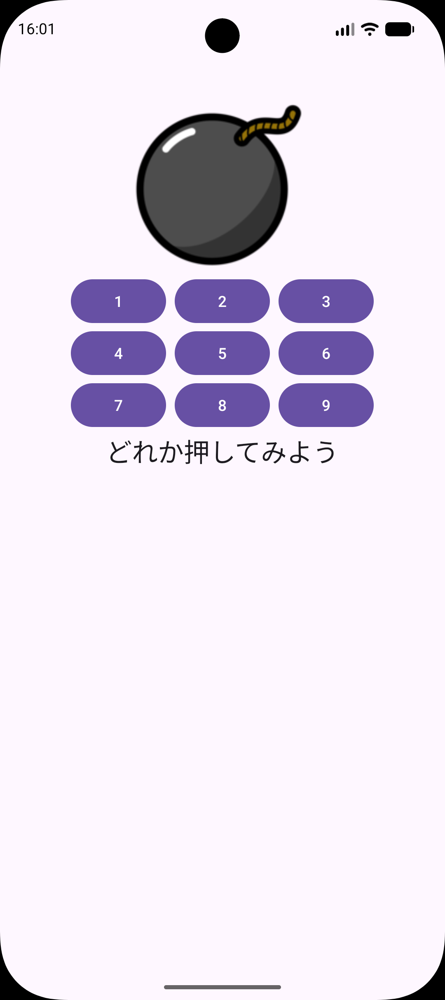
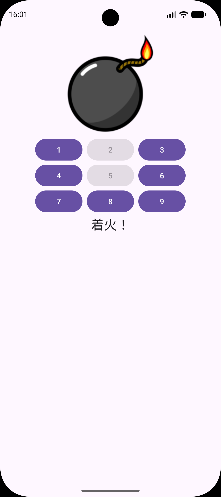
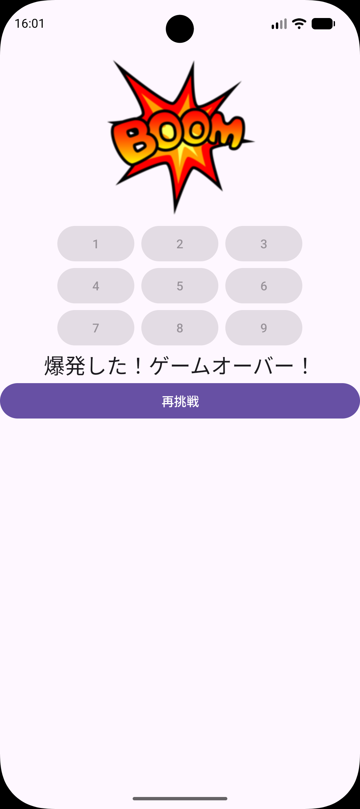
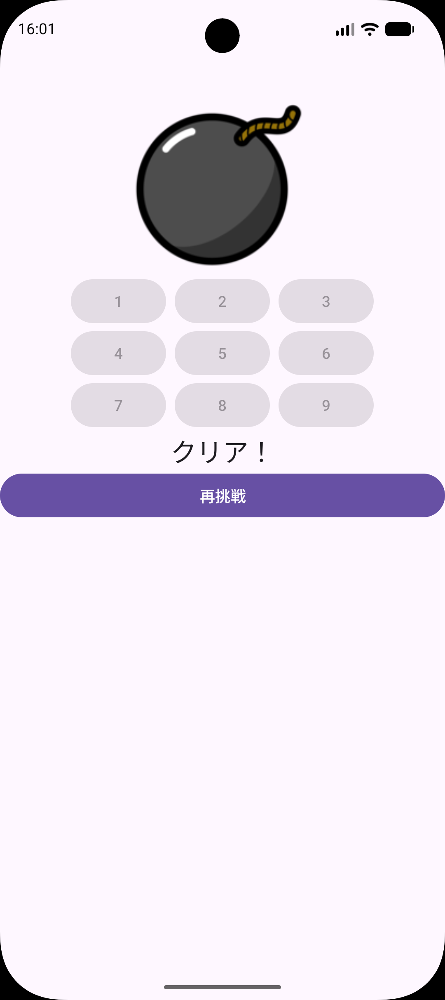
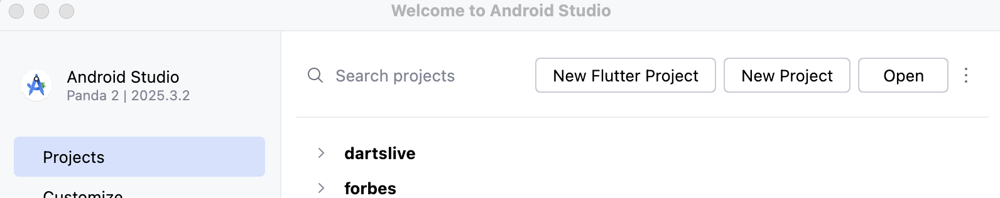
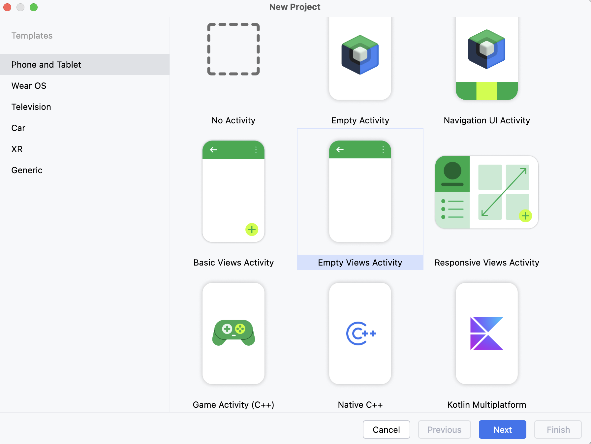
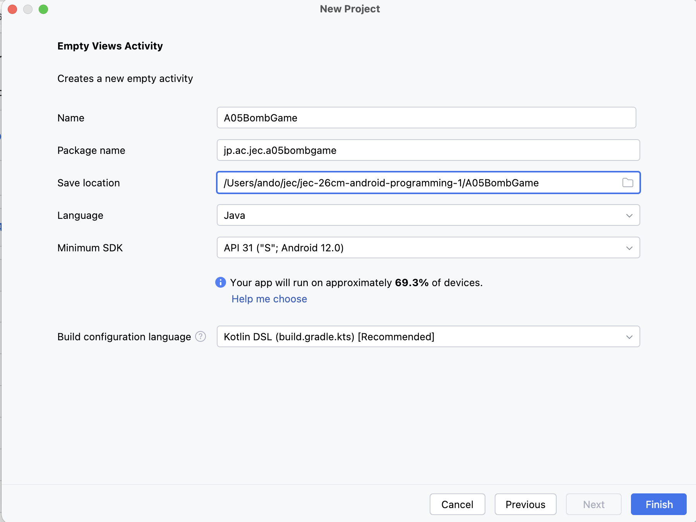
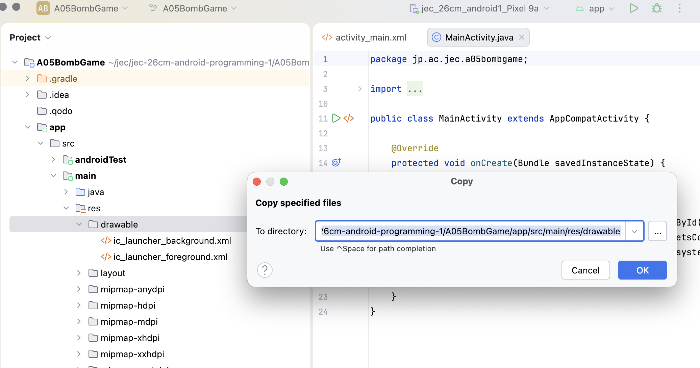
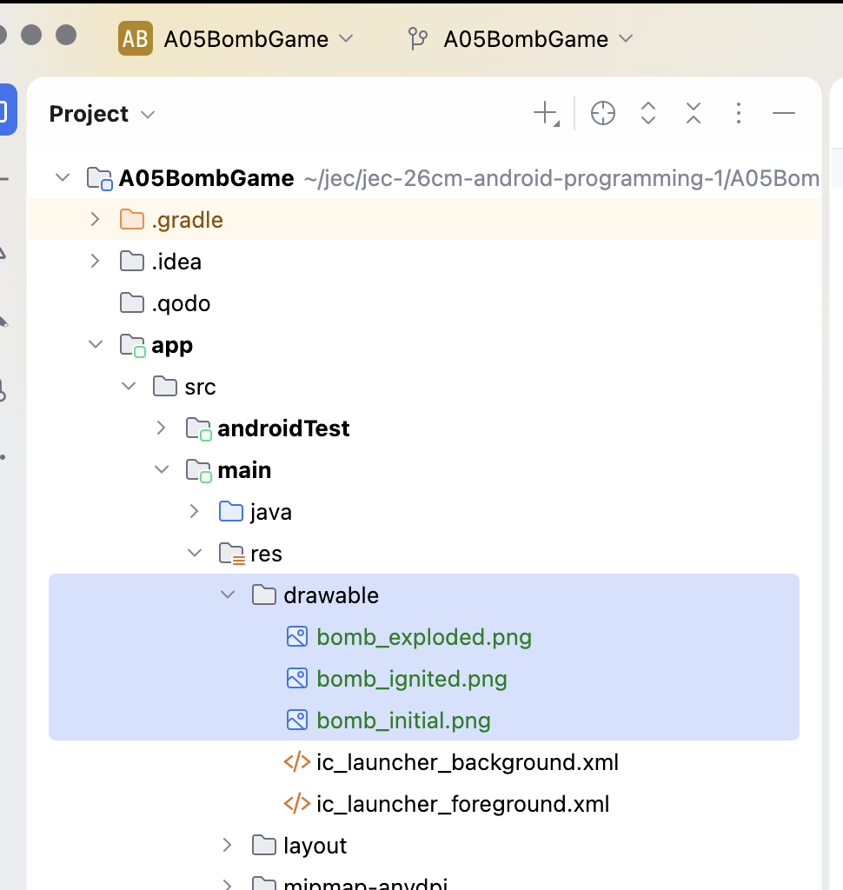
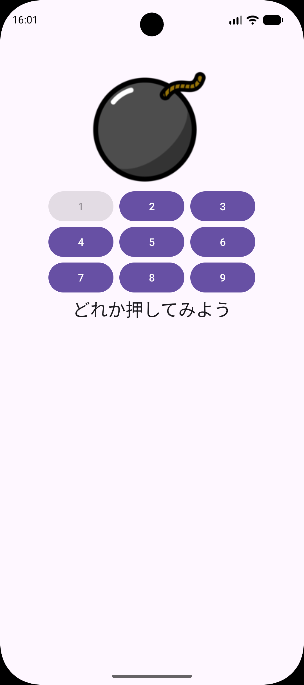

BOMB GAME
爆弾ゲームを
作ろう
数字を押す。導火線に火がつく。2つ目で爆発。
爆弾の状態を数字で覚えて、ドキドキするゲームへ。
今日のゴール
A01〜A03で学んだ「XMLで画面を作る」「配列とfor文で同じ処理を付ける」「乱数」「フィールドで値を覚える」を使い、爆弾ゲームを作ります。1〜9の数字ボタンのうち、2つが導火線スイッチです。どれがスイッチかは、画面を見てもわかりません。
{kind=link}

{kind=link}

{kind=link}

{kind=link}

できるようになること
- 画像をプロジェクトに追加し、爆弾の画像と3行×3列の数字ボタンを並べる。
- メソッドとdo-while文で、重ならない2つの乱数を作り、Logcatで確かめる。
- 定数とフィールドで爆弾の状態を覚え、押した数字とクリアの条件で表示を切り替える。
スイッチの数字は毎回ランダムに決まるため、画像と同じ操作をしても結果は変わります。
90分×3コマで進めます
| 授業 | 範囲 | 終了時にできること |
|---|---|---|
| 1コマ目 | STEP 0〜4 | 画像を追加し、ゲームの画面を作る。 |
| 2コマ目 | STEP 5〜7 | スイッチの数字を決め、押した数字で着火・爆発することを確かめる。 |
| 3コマ目 | STEP 8〜11 | 再挑戦とクリアを作り、ミニ練習・動作確認を行う。 |
各コマに再実行と個別確認の時間を含みます。予習は不要です。
毎回、自分で新規作成します
作る場所は Documents/Android1/A05BombGame です。完成プロジェクトは初回から開けます。STEP 2で使う画像は、教材のフォルダに入っています。STEP 2でFinderからコピーします。
完成アプリの状態
| 状態 | 爆弾の画像 | メッセージ | 数字ボタン | 再挑戦 |
|---|---|---|---|---|
| 起動直後・再挑戦の後 | 火のない爆弾 | どれか押してみよう | すべて押せる | 見えない |
| スイッチ以外を押した | 変わらない | 変わらない | 押したボタンだけ押せない | 見えない |
| スイッチを1つ押した（着火） | 導火線に火がつく | 着火！ | 押したボタンだけ押せない | 見えない |
| スイッチを2つとも押した（爆発） | 爆発の画像 | 爆発した！ゲームオーバー！ | すべて押せない | 表示する |
| スイッチ以外の7個をすべて押した（クリア） | そのまま | クリア！ | すべて押せない | 表示する |
1度押した数字は、もう押せません。着火したあとでも、残りのスイッチを押さずにスイッチ以外の7個を押し終えればクリアです。このとき爆弾は火がついた画像のままです。再挑戦を押すと、スイッチの数字を選び直して最初の表示に戻ります。
画面回転について
各単元では画面回転時のデータ保持と横画面のレイアウトを扱いません。回転などでActivityが作り直されると、押したボタンと爆弾の状態は初期状態に戻り、スイッチの数字も選び直されます。横向きではメッセージや再挑戦ボタンが見えなくなる場合があるため、縦向きで使います。考え方と対処法は共通資料：開発TipsのC章にあります。
ここで止まって、確認
できたらチェックします。困ったときはSTEP番号と画面を先生に見せましょう。
プロジェクトを作って実行
授業環境はMacと Android Studio Panda 2 | 2025.3.2 です。これまでの単元とは別のプロジェクトを作ります。
- Android Studioの New Project をクリックします。別のプロジェクトを開いているときは File → New → New Project を選びます。
{kind=link}

- Phone and Tablet → Empty Views Activity → Next の順に選びます。名前に Views があることを確認します。
{kind=link}

| 項目 | 入力・選択する内容 |
|---|---|
| Name | A05BombGame |
| Package name | jp.ac.jec.a05bombgame（すべて小文字） |
| Save location | /Users/ユーザ名/Documents/Android1/A05BombGame |
| Language | Java |
| Minimum SDK | API 31（Android 12.0） |
| Build configuration language | Kotlin DSL（build.gradle.kts） |
{kind=link}

- Finderの 移動 → ホーム で自分のユーザ名を確認します。書類（Documents）に
Android1フォルダがなければ作ります。 - 表の値と保存先を確認し、Finish をクリックします。
ユーザ名は自分の名前に置き換えます。 - Gradle Sync が完了するまで待ちます。
- 共通資料：Auto ImportのJava設定を確認します。
この単元で使う場所
| 役割 | Project表示で開く場所 |
|---|---|
| 画像 | app/src/main/res/drawable |
| 画面（XML） | app/src/main/res/layout/activity_main.xml |
| 動き（Java） | app/src/main/java/jp/ac/jec/a05bombgame/MainActivity.java |
左の一覧が見えないときは View → Tool Windows → Project を開きます。一覧の上の表示名が Project になっていることを確認します。パッケージのフォルダが jp.ac.jec.a05bombgame とまとめて表示される場合もあります。
変更前に1回Runする
- 共通資料：エミュレータに従って端末を起動します。
- 上部で app と jec_26cm_android1_Pixel 9a を選び、Run ▶ を押します。
- Hello World! が表示されれば成功です。
MainActivity.ktができたとき
先生に画面を見せ、Empty Views Activity / Javaの選択を確認します。
ここで止まって、確認
できたらチェックします。困ったときはSTEP番号と画面を先生に見せましょう。
画像をdrawableに追加
追加する場所：app/src/main/res/drawable
爆弾の3つの画像を、自分のプロジェクトに入れます。res/drawable は、アプリで表示する画像を置くフォルダです。A03と同じ手順です。
| ファイル名 | 表す状態 | XMLでの名前 | Javaでの名前 |
|---|---|---|---|
| bomb_initial.png | 火のない爆弾（起動直後） | @drawable/bomb_initial | R.drawable.bomb_initial |
| bomb_ignited.png | 導火線に火がついた爆弾（着火） | （使わない） | R.drawable.bomb_ignited |
| bomb_exploded.png | 爆発 | （使わない） | R.drawable.bomb_exploded |
名前はファイル名から .png を取ったものです。drawableのファイル名には、小文字の英字・数字・_（アンダースコア） だけを使います。
① 教材のフォルダから画像をコピーする
3つの画像は、教科書といっしょに配られた教材のフォルダに入っています。Finderで開いて、3つまとめてコピーします。
- Finderを開き、左側の 書類 をクリックします。教材のフォルダをダブルクリックで開きます。名前は
android1-student-materials-のうしろに日付が付いた形で、日付は配られた回によって変わります。 - その中を
docs → bomb-game → downloadsの順に開きます。bomb-gameは、いま読んでいるこの教科書（index.html）が入っているフォルダです。 - ⌘ を押しながら、
bomb_exploded.png・bomb_ignited.png・bomb_initial.pngの3つをクリックして選び、⌘ C でコピーします。同じフォルダにあるA05BombGame.zipは完成プロジェクトです。選びません。
教材のフォルダが見つからないとき
教材のフォルダは、はじめの準備で「書類」へ移動したものです（共通資料：はじめの準備の1.）。まだ移動していなければ、先にそちらを行います。同じ教材を2回ダウンロードして名前のうしろに (1) が付いたものがあるときは、自分で判断せず先生に見せてください。
② 自分のプロジェクトに貼り付ける
- Android Studioに戻り、自分の
A05BombGameを開いていることを確認します。 - Project表示で
app/src/main/res/drawableフォルダをクリックして選び、⌘ V で貼り付けます。 - Copy の画面が出たら、To directory を確認します。末尾が
A05BombGame/app/src/main/res/drawableになっていれば OK を押します。見本（完成プロジェクト）も開いている人は、途中にsamplesが入っていないことも確かめます。入っていたら、見本の方に貼り付けようとしています。
{kind=link}

{kind=link}

貼り付けた場所を間違えたとき
layout や mipmap など別のフォルダに入った画像は、Project表示で選んで ⌘ Delete で削除し、もう一度 drawable に貼り付けます。見本の samples 側のプロジェクトには貼り付けません。
Runで確かめる
画像を追加しただけでは、画面は変わりません。Runして Hello World! が表示され、ビルドエラーが出なければ成功です。
ここで止まって、確認
できたらチェックします。困ったときはSTEP番号と画面を先生に見せましょう。
爆弾と数字ボタンを並べる
変更するファイル：app/src/main/res/layout/activity_main.xml
まず、爆弾の画像と1〜9の数字ボタンを作ります。Code 表示に切り替え、XMLの中で ⌘ A → 貼り付けを行い、ファイル全体を置き換えます。
<?xml version="1.0" encoding="utf-8"?>
<LinearLayout xmlns:android="http://schemas.android.com/apk/res/android"
xmlns:tools="http://schemas.android.com/tools"
android:id="@+id/main"
android:layout_width="match_parent"
android:layout_height="match_parent"
android:gravity="center_horizontal"
android:orientation="vertical"
tools:context=".MainActivity">
<ImageView
android:id="@+id/img_bomb"
android:layout_width="wrap_content"
android:layout_height="wrap_content"
android:contentDescription="@null"
android:src="@drawable/bomb_initial" />
<LinearLayout
android:layout_width="wrap_content"
android:layout_height="wrap_content"
android:orientation="horizontal">
<Button
android:id="@+id/btn1"
android:layout_width="wrap_content"
android:layout_height="wrap_content"
android:text="1"
tools:ignore="ButtonStyle" />
<Button
android:id="@+id/btn2"
android:layout_width="wrap_content"
android:layout_height="wrap_content"
android:layout_marginHorizontal="8dp"
android:text="2"
tools:ignore="ButtonStyle" />
<Button
android:id="@+id/btn3"
android:layout_width="wrap_content"
android:layout_height="wrap_content"
android:text="3"
tools:ignore="ButtonStyle" />
</LinearLayout>
<LinearLayout
android:layout_width="wrap_content"
android:layout_height="wrap_content"
android:orientation="horizontal">
<Button
android:id="@+id/btn4"
android:layout_width="wrap_content"
android:layout_height="wrap_content"
android:text="4"
tools:ignore="ButtonStyle" />
<Button
android:id="@+id/btn5"
android:layout_width="wrap_content"
android:layout_height="wrap_content"
android:layout_marginHorizontal="8dp"
android:text="5"
tools:ignore="ButtonStyle" />
<Button
android:id="@+id/btn6"
android:layout_width="wrap_content"
android:layout_height="wrap_content"
android:text="6"
tools:ignore="ButtonStyle" />
</LinearLayout>
<LinearLayout
android:layout_width="wrap_content"
android:layout_height="wrap_content"
android:orientation="horizontal">
<Button
android:id="@+id/btn7"
android:layout_width="wrap_content"
android:layout_height="wrap_content"
android:text="7"
tools:ignore="ButtonStyle" />
<Button
android:id="@+id/btn8"
android:layout_width="wrap_content"
android:layout_height="wrap_content"
android:layout_marginHorizontal="8dp"
android:text="8"
tools:ignore="ButtonStyle" />
<Button
android:id="@+id/btn9"
android:layout_width="wrap_content"
android:layout_height="wrap_content"
android:text="9"
tools:ignore="ButtonStyle" />
</LinearLayout>
</LinearLayout>| 指定 | 意味 |
|---|---|
| android:id="@+id/img_bomb" | 爆弾の画像を表示するImageView。Javaから画像を切り替えるため、idを付ける。 |
| android:src="@drawable/bomb_initial" | 起動直後は、STEP 2で追加した火のない爆弾を表示する。 |
| android:contentDescription="@null" | 画面読み上げ用の説明文。この単元では説明文を付けない指定にして、警告を出さないようにする。 |
| android:gravity="center_horizontal" | 親の中の部品を、横方向の中央にそろえる。 |
| btn1 〜 btn9 | 数字ボタンのid。android:text の1〜9は、あとでJavaが数字として読み取る。 |
| android:layout_marginHorizontal="8dp" | 中央のボタンの左右に8dpのすき間を作る。 |
親の orientation="vertical" が画像と3つの行を縦に並べ、行の orientation="horizontal" が3つのボタンを横に並べます。A02CalcGameの数字ボタンと同じ入れ子の形です。android:id="@+id/main" はJavaのひな形でも使うため残します。tools:ignore="ButtonStyle" はエディタの警告を抑える指定で、クリックの処理ではありません。
Runで確かめる
火のない爆弾の画像と、1〜9が3行×3列で表示されれば成功です。まだ数字を押しても何も起きません。
@drawable/bomb_initial が赤いときは、STEP 2の画像の場所とファイル名を確認します。文字を直接書いたことによる Hardcoded text の警告は、これまでの単元と同様に授業ではそのまま進めます。
ここで止まって、確認
できたらチェックします。困ったときはSTEP番号と画面を先生に見せましょう。
メッセージと再挑戦ボタン
変更するファイル：activity_main.xml
数字ボタンの下に、メッセージと再挑戦ボタンを作ります。XMLの最後の </LinearLayout> の直前に追加します。STEP 3の画像や数字ボタンは残します。
<TextView
android:id="@+id/txt_message"
style="@style/TextAppearance.Material3.HeadlineSmall"
android:layout_width="wrap_content"
android:layout_height="wrap_content"
android:text="どれか押してみよう" />
<Button
android:id="@+id/btn_retry"
android:layout_width="match_parent"
android:layout_height="wrap_content"
android:text="再挑戦"
android:visibility="invisible" />| 指定 | 意味 |
|---|---|
| txt_message | 「どれか押してみよう」「着火！」などを表示するTextView。 |
| style="@style/TextAppearance.Material3.HeadlineSmall" | Material 3の「小さめの見出し」の文字スタイルを使う。A03のBodyLargeより大きい文字になる。 |
| btn_retry | 再挑戦ボタン。android:layout_width="match_parent" で横幅いっぱいに広げる。 |
| android:visibility="invisible" | 最初はボタンを見えない状態にする。見えなくても、表示する場所は残る。ゲームが終わったらJavaで表示する。 |
Runで確かめる
数字ボタンの下に「どれか押してみよう」が表示されます。再挑戦ボタンは見えません。
1コマ目はここまで
保存してからもう一度Runします。画面の部品のidを、先生に1つずつ指さして説明しましょう。見えない再挑戦ボタンも、XMLのどこにあるかを指さします。次回も自分の Documents/Android1/A05BombGame を開きます。
ここで止まって、確認
できたらチェックします。困ったときはSTEP番号と画面を先生に見せましょう。
導火線スイッチの数字を決める
変更するファイル：MainActivity.java
前回の画面をRunして確認してから始めます。1〜9の中から、重ならない2つの数字をランダムに選び、導火線スイッチにします。選んだ数字はLogcatで確かめます。
① クラスの中、onCreateの外に1行追加
public class MainActivity extends AppCompatActivity { のすぐ下、@Override より上に追加します。
private int[] randomIgnitionNumbers; // 導火線スイッチの数字int[] は「intの配列」という型です。ここでは名前と型だけを決め、中に入れる2つの数字は、このあと作るメソッドで決めます。スイッチの数字はメソッドで作り、STEP 7でクリックの処理から読むため、フィールドにします。A02の answer も、メソッドで作ってクリックの処理で読むフィールドでした。
② onCreateの外にメソッドを追加
onCreate を閉じる } の下に1行空けて、MainActivityを閉じる最後の } より上に追加します。A02の startQuestion と同じ場所です。
/**
* 導火線スイッチの数字をランダムに2つ生成する.
*/
private void generateIgnitionNumbers() {
do {
// 1から9まで範囲のランダムな数値を2つ作る.同じ値が含まれていたら作り直す.
randomIgnitionNumbers = ThreadLocalRandom.current().ints(2, 1, 10).toArray();
} while (Arrays.stream(randomIgnitionNumbers).distinct().count() != 2);
// debug
for (var randomIgnitionNumber : randomIgnitionNumbers) {
Log.d("MainActivity", "randomIgnitionNumber = " + randomIgnitionNumber);
}
}importは android.util.Log、java.util.Arrays、java.util.concurrent.ThreadLocalRandom です。Arrays に候補が出たら java.util.Arrays を選びます。
| コード | 意味 |
|---|---|
| /** ... */ | メソッドの説明を書くコメント。 |
| private void generateIgnitionNumbers() | 「スイッチの数字を作る」処理に名前を付けたメソッド。STEP 8の再挑戦からも呼び出す。 |
| ThreadLocalRandom.current().ints(2, 1, 10).toArray() | 1以上、10未満（1〜9）の整数を2個作り、intの配列にする。A02の nextInt(1, 10) を2回分まとめて作るイメージ。 |
| randomIgnitionNumbers = ...; | 作った配列を、①のフィールドに入れる。メソッドの中から、フィールドに直接入れている。 |
| Arrays.stream(randomIgnitionNumbers).distinct().count() | 配列から重なりを取り除いた数字の個数。{3, 7} なら2、{5, 5} なら1。 |
| do { ... } while (条件); | 中を必ず1回実行し、条件がtrueの間くり返す。 |
| != 2 | 「2ではない」。同じ数字が2つ出たときにtrueになり、もう一度作り直す。 |
| for (var randomIgnitionNumber : randomIgnitionNumbers) | 2つの数字を1つずつ取り出す拡張for文。randomIgnitionNumber（最後にsがない）は取り出した1つの数字。 |
| Log.d("MainActivity", ...) | 数字をLogcatに出す。A01・A03と同じログ。 |
Arrays.stream(配列) は、配列の中身を順番に調べるメソッドです。この単元では、このあと anyMatch（STEP 7）、forEach（STEP 7）、filter と count（STEP 9）も使います。
do-while文を読む
| くり返し | できた配列 | distinct().count() | != 2 | 次にすること |
|---|---|---|---|---|
| 1回目 | {5, 5} | 1 | true | 同じ数字なので、もう一度作る（フィールドの配列は作り直した配列に置き換わる）。 |
| 2回目 | {5, 8} | 2 | false | くり返しを終え、フィールドに入った {5, 8} をログに出す。 |
A03の番号付きfor文は、中を実行する前に条件を調べました。do-while文は、まず中を1回実行してから条件を調べます。「乱数を作ってから、重なっていないか確かめる」処理に合っています。1回目で重ならなければ、くり返しは1回で終わります。
仕様の確認：ThreadLocalRandom.ints、Arrays.stream、IntStream.distinct（Android公式）。
③ onCreateから呼び出す
onCreate の中で、ひな形の return insets; に続く }); の下に、1行空けて追加します。
generateIgnitionNumbers();画面を作るときに1回だけ、スイッチの数字を決めます。メソッドの中身は、呼び出したときに実行されます。
Runで確かめる
- 共通資料：Logcatに従ってLogcatを開き、検索欄を次の文字にします。
package:jp.ac.jec.a05bombgame tag:MainActivity level:DEBUG- Runします。起動したときに、
randomIgnitionNumberの行が2行出ます。 - アプリをStopしてからRunし直すと、数字が選び直されます（1つだけ変わる回や、たまたま同じ組み合わせになる回もあります）。3〜4回くり返し、どの回でも2つの数字が違うことを確かめます。
- 画面はまだ変わりません。数字を押しても何も起きません。
MainActivity D randomIgnitionNumber = 6
MainActivity D randomIgnitionNumber = 8Logcatはスイッチの確認用
このログを見ると、どれがスイッチかわかります。STEP 7・9では、このログを見ながら着火・爆発・クリアを確実に試します。友達と遊ぶときは、Logcatを隠しておきましょう。
ここで止まって、確認
できたらチェックします。困ったときはSTEP番号と画面を先生に見せましょう。
押したボタンを押せなくする
変更するファイル：MainActivity.java
画面の部品を取得し、9個の数字ボタンに同じクリックの処理を付けます。まずは「押したボタンを押せなくする」だけを作ります。
① 画面の部品を取得する
STEP 5で追加した generateIgnitionNumbers(); の下に、1行空けて追加します。
var txtMessage = (TextView) findViewById(R.id.txt_message);
var imgBomb = (ImageView) findViewById(R.id.img_bomb);
var btnRetry = findViewById(R.id.btn_retry);
var numberButtons = new Button[]{
findViewById(R.id.btn1), findViewById(R.id.btn2), findViewById(R.id.btn3),
findViewById(R.id.btn4), findViewById(R.id.btn5), findViewById(R.id.btn6),
findViewById(R.id.btn7), findViewById(R.id.btn8), findViewById(R.id.btn9)
};| コード | 意味 |
|---|---|
| (TextView) findViewById(R.id.txt_message) | 表示する文字を変えるため、TextViewとして扱う。 |
| (ImageView) findViewById(R.id.img_bomb) | 表示する画像を変えるため、ImageViewとして扱う。 |
| btnRetry | クリック登録と表示の切り替えだけを使うため、A03と同じくキャストしない。 |
| new Button[]{ ... } | 9個の数字ボタンを、Buttonの配列にまとめる。A03の imageViews と同じ書き方。 |
importは android.widget.Button、android.widget.ImageView、android.widget.TextView です。txtMessage などが灰色で表示されるのは、まだ使っていないためです。
② 9個のボタンにクリックの処理を付ける
①で追加した配列の }; の下に、1行空けて追加します。
for (var button : numberButtons) {
button.setOnClickListener(v -> {
button.setEnabled(false);
});
}| コード | 意味 |
|---|---|
| for (var button : numberButtons) | 配列からボタンを1つずつ取り出し、クリックの処理を登録する。 |
| button.setEnabled(false) | 押されたボタンを、押せない状態（灰色）にする。同じ数字を2回押せなくなる。 |
for文は画面を作るときに9回実行され、9個のボタンに同じ処理を登録します。クリックの処理の中の button は、そのボタン自身を指します。1を押せば1のボタン、5を押せば5のボタンが灰色になります。
Runで確かめる
- 1を押すと、1のボタンだけが灰色になり、押せなくなります。
- 別の数字を押すと、そのボタンも灰色になります。
- メッセージと爆弾の画像は、まだ変わりません。
{kind=link}

ここで止まって、確認
できたらチェックします。困ったときはSTEP番号と画面を先生に見せましょう。
着火と爆発
変更するファイル：MainActivity.java
押した数字がスイッチかどうかを調べ、スイッチなら爆弾の状態を1つ進めます。状態に合わせて、画像とメッセージを変えます。
① 爆弾の状態を表す定数とフィールド
public class MainActivity extends AppCompatActivity { のすぐ下、STEP 5の private int[] randomIgnitionNumbers の上に追加します。
private static final int STATE_INITIAL = 1; // 着火前の初期状態
private static final int STATE_IGNITED = 2; // 導火線点火
private static final int STATE_EXPLODED = 3; // 爆発
private int nowState = STATE_INITIAL; // 爆弾の状態| コード | 意味 |
|---|---|
| private static final int STATE_INITIAL = 1; | 「着火前」を1とする定数。final は値を変えられない、static はクラスで1つだけ持つ、という意味。定数は大文字と_で名前を付ける。 |
| STATE_IGNITED = 2 / STATE_EXPLODED = 3 | 「着火」を2、「爆発」を3とする定数。 |
| private int nowState = STATE_INITIAL; | 今の爆弾の状態を覚えるフィールド。最初は定数 STATE_INITIAL の値（1）が入る。あとで変わるのは nowState だけで、定数は1のまま。 |
状態は1 → 2 → 3の順に並んでいるので、スイッチを押すたびに nowState を1増やせば次の状態になります。nowState == 2 と書くより、nowState == STATE_IGNITED と書くほうが「着火しているか」を調べていると読み取れます。nowState はクリックの処理の中で書き換えるため、A03の selectedHand と同じくフィールドにします。
② スイッチか調べて、画像とメッセージを変える
STEP 6のクリックの処理の中で、button.setEnabled(false); の下に、1行空けて追加します。
var number = Integer.parseInt(button.getText().toString());
var match = Arrays.stream(randomIgnitionNumbers).anyMatch(num -> num == number);
if (match) nowState++;
if (nowState == STATE_IGNITED) {
imgBomb.setImageResource(R.drawable.bomb_ignited);
txtMessage.setText("着火！");
} else if (nowState == STATE_EXPLODED) {
imgBomb.setImageResource(R.drawable.bomb_exploded);
txtMessage.setText("爆発した！ゲームオーバー！");
btnRetry.setVisibility(View.VISIBLE);
Arrays.stream(numberButtons).forEach(b -> b.setEnabled(false));
}追加のimportは android.view.View です。
| コード | 意味 |
|---|---|
| Integer.parseInt(button.getText().toString()) | 押したボタンの文字、たとえば "7" を、整数の7に変える。A02と同じ。 |
| Arrays.stream(randomIgnitionNumbers).anyMatch(num -> num == number) | スイッチの配列の中に、押した数字と同じ値が1つでもあればtrue。 |
| num -> num == number | 配列の値を1つずつ num として受け取り、押した数字と比べる短い書き方。クリックの処理の v -> { } と同じ矢印を使う。 |
| if (match) nowState++; | スイッチなら状態を1つ進める。中が1行だけなので { } を省略している。 |
| if ... else if ... | 状態が着火（2）なら着火の表示、爆発（3）なら爆発の表示。どちらでもなければ何もしない。 |
| imgBomb.setImageResource(R.drawable.bomb_ignited) | 爆弾の画像を、火がついた画像に変える。A03のCPUの手と同じ方法。 |
| btnRetry.setVisibility(View.VISIBLE) | 見えなかった再挑戦ボタンを表示する。 |
| Arrays.stream(numberButtons).forEach(b -> b.setEnabled(false)) | 9個のボタンをすべて押せなくする。for (var b : numberButtons) { b.setEnabled(false); } と同じ動き。 |
anyMatchを読む
| スイッチが {3, 7} のとき | num = 3 | num = 7 | match |
|---|---|---|---|
| 7を押した（number = 7） | 3 == 7 → false | 7 == 7 → true | true（スイッチ） |
| 5を押した（number = 5） | 3 == 5 → false | 7 == 5 → false | false（スイッチではない） |
クリックの処理は、上から 押せなくする → スイッチか調べる → 状態を進める → 状態に合わせて表示する の順に実行されます。1つのボタンは1回しか押せないため、同じスイッチで状態が2回進むことはありません。
仕様の確認：IntStream.anyMatch、Stream（forEach・filter・count）、View.setVisibility（Android公式）。
Runで確かめる
- Logcatでスイッチの2つの数字を確認します（STEP 5の検索欄）。
- スイッチではない数字を押します。そのボタンが灰色になるだけで、表示は変わりません。
- スイッチの1つを押します。導火線に火がついた画像と「着火！」になります。
- もう1つのスイッチを押します。爆発の画像と「爆発した！ゲームオーバー！」になり、数字はすべて押せなくなり、再挑戦ボタンが表示されます。
- 再挑戦を押しても、まだ何も起きません（STEP 8で作ります）。もう一度遊ぶときは Run ▶ で起動し直します。
まだクリアにはなりません
スイッチ以外の7個をすべて押しても、このSTEPでは何も表示されません。クリアの判定はSTEP 9で追加します。
2コマ目はここまで
保存してからもう一度Runします。次回はRunして、Logcatの数字を見ながら着火と爆発を確かめてからSTEP 8へ進みます。
ここで止まって、確認
できたらチェックします。困ったときはSTEP番号と画面を先生に見せましょう。
再挑戦で最初に戻す
変更するファイル：MainActivity.java
再挑戦を押したら、起動直後と同じ表示に戻し、スイッチの数字を選び直します。
STEP 6の配列 numberButtons の }; と、for (var button : numberButtons) { の行の間に追加します。追加したコードの上と下に、1行ずつ空けます。完成版と同じ順番にするためです。
btnRetry.setOnClickListener(v -> {
nowState = STATE_INITIAL;
txtMessage.setText("どれか押してみよう");
imgBomb.setImageResource(R.drawable.bomb_initial);
v.setVisibility(View.INVISIBLE);
generateIgnitionNumbers();
Arrays.stream(numberButtons).forEach(b -> b.setEnabled(true));
});| コード | 元に戻すもの |
|---|---|
| nowState = STATE_INITIAL | 爆弾の状態を着火前（1）に戻す。 |
| txtMessage.setText("どれか押してみよう") | メッセージを最初の文に戻す。 |
| imgBomb.setImageResource(R.drawable.bomb_initial) | 爆弾の画像を、火のない画像に戻す。 |
| v.setVisibility(View.INVISIBLE) | v は押された再挑戦ボタン自身。ボタンを見えなくする。 |
| generateIgnitionNumbers() | STEP 5のメソッドを呼び、スイッチの数字を選び直す。 |
| Arrays.stream(numberButtons).forEach(b -> b.setEnabled(true)) | 9個のボタンをすべて押せる状態に戻す。 |
スイッチの数字を作る処理をメソッドにしたので、起動時（onCreate）と再挑戦の2か所から、同じ処理を1行で呼び出せます。A02の startQuestion と同じ考え方です。
Runで確かめる
- Logcatでスイッチを確認し、2つとも押して爆発させます。
- 再挑戦を押します。火のない爆弾・「どれか押してみよう」・すべて押せる数字ボタンに戻り、再挑戦ボタンが見えなくなります。
- Logcatに、選び直した2つの数字が出ます（前と同じ数字になることもあります）。2〜3回くり返します。
ここで止まって、確認
できたらチェックします。困ったときはSTEP番号と画面を先生に見せましょう。
クリアを判定する
変更するファイル：MainActivity.java
最後に、スイッチ以外の7個をすべて押したら「クリア！」にします。STEP 7の表示の処理を、クリアの判定で包みます。
① 置き換える範囲を選ぶ
数字ボタンのクリックの処理の中で、if (nowState == STATE_IGNITED) { の行から、else if (nowState == STATE_EXPLODED) { ... } を閉じる } の行までを選びます。その下の }); は選びません。var number・var match・if (match) nowState++; の3行も残します。
② 次のコードに置き換える
var disableButtonCount = Arrays.stream(numberButtons).filter(b -> !b.isEnabled()).count();
// 導火線スイッチ(2個)以外の7個をすべて押したらクリア。着火済みなら押したボタンは8個になる
if ((nowState == STATE_INITIAL && disableButtonCount == 7) ||
(nowState == STATE_IGNITED && disableButtonCount == 8)) { // ゲームクリアの場合
txtMessage.setText("クリア！");
btnRetry.setVisibility(View.VISIBLE);
Arrays.stream(numberButtons).forEach(b -> b.setEnabled(false));
} else { // ゲーム続行
if (nowState == STATE_IGNITED) {
imgBomb.setImageResource(R.drawable.bomb_ignited);
txtMessage.setText("着火！");
} else if (nowState == STATE_EXPLODED) {
imgBomb.setImageResource(R.drawable.bomb_exploded);
txtMessage.setText("爆発した！ゲームオーバー！");
btnRetry.setVisibility(View.VISIBLE);
Arrays.stream(numberButtons).forEach(b -> b.setEnabled(false));
}
}貼り付けたあと、字下げがずれていたら Code → Reformat Code（⌥ ⌘ L）でそろえます。else { ... } の中は、STEP 7で書いた着火・爆発の処理と同じです。
| コード | 意味 |
|---|---|
| Arrays.stream(numberButtons).filter(b -> !b.isEnabled()).count() | 押せないボタンだけを残して、その数を数える。! は反対。今押したボタンも数に入る。 |
| && | 「かつ」。両方の条件がtrueのときtrue。 |
| || | 「または」。どちらかの条件がtrueならtrue。 |
| ( ... ) || ( ... ) | 括弧の中を1つのまとまりとして先に調べ、どちらかのまとまりがtrueならクリア。 |
| // ゲームクリアの場合 | クリアなら、メッセージを出し、再挑戦を表示し、数字をすべて押せなくする。 |
| else { // ゲーム続行 | クリアではないとき。STEP 7の着火・爆発の判定を行う。爆発した場合は、ここでゲームオーバーになる。 |
クリアの条件を読む
条件は （着火前 かつ 7個押せない）または（着火 かつ 8個押せない） という意味です。上の行のコメントも、同じことを説明しています。Javaでは && を || より先に計算するため、括弧がなくても結果は同じです（掛け算を足し算より先に計算するのと同じ）。読み間違えないように、まとまりを括弧で囲んでいます。
| 状態 | 押せないボタンの数 | 意味 |
|---|---|---|
| STATE_INITIAL（着火前） | 7 | スイッチ以外の7個をすべて押した。残りの2個はどちらもスイッチ。 |
| STATE_IGNITED（着火） | 8 | スイッチ1個と、スイッチ以外の7個を押した。残りの1個はスイッチ。 |
| STATE_EXPLODED（爆発） | — | クリアにはならない。elseの中で爆発を表示する。 |
数を数える行は、button.setEnabled(false) と nowState++ のあとにあります。そのため、今押したボタンと、今の押し方で進んだ状態を使って判定できます。
置き換えたあとの、数字ボタンの処理全体で照合する
for (var button : numberButtons) {
button.setOnClickListener(v -> {
button.setEnabled(false);
var number = Integer.parseInt(button.getText().toString());
var match = Arrays.stream(randomIgnitionNumbers).anyMatch(num -> num == number);
if (match) nowState++;
var disableButtonCount = Arrays.stream(numberButtons).filter(b -> !b.isEnabled()).count();
// 導火線スイッチ(2個)以外の7個をすべて押したらクリア。着火済みなら押したボタンは8個になる
if ((nowState == STATE_INITIAL && disableButtonCount == 7) ||
(nowState == STATE_IGNITED && disableButtonCount == 8)) { // ゲームクリアの場合
txtMessage.setText("クリア！");
btnRetry.setVisibility(View.VISIBLE);
Arrays.stream(numberButtons).forEach(b -> b.setEnabled(false));
} else { // ゲーム続行
if (nowState == STATE_IGNITED) {
imgBomb.setImageResource(R.drawable.bomb_ignited);
txtMessage.setText("着火！");
} else if (nowState == STATE_EXPLODED) {
imgBomb.setImageResource(R.drawable.bomb_exploded);
txtMessage.setText("爆発した！ゲームオーバー！");
btnRetry.setVisibility(View.VISIBLE);
Arrays.stream(numberButtons).forEach(b -> b.setEnabled(false));
}
}
});
}Runで確かめる
- Logcatでスイッチを確認し、スイッチ以外の7個をすべて押します。7個目で「クリア！」になり、数字はすべて押せなくなり、再挑戦が表示されます。爆弾は火のない画像のままです。
- 再挑戦を押し、新しいスイッチを確認します。スイッチを1つ押して着火させてから、スイッチ以外の7個を押します。7個目で「クリア！」になり、爆弾は火がついた画像のままです。
- 再挑戦を押し、スイッチを2つとも押すと、これまでどおり爆発します。
ここで止まって、確認
できたらチェックします。困ったときはSTEP番号と画面を先生に見せましょう。
ミニ練習
まずクリアまで完成させます。そのあと、次の小変更を1つずつ試します。予想 → 変更 → Run → 説明 → 元に戻すの順で行います。
練習1：スイッチを固定して表を確かめる
generateIgnitionNumbers メソッドの randomIgnitionNumbers = ThreadLocalRandom.current().ints(2, 1, 10).toArray(); の行で、= の右側だけを new int[]{1, 9} に変えます。変更後の行は次のとおりです。
randomIgnitionNumbers = new int[]{1, 9};スイッチはいつも1と9です。Runして、Logcatに1と9が出ることを確かめます。次の操作の結果を予想してから試します。
- 5を押す → 1を押す → 9を押す
- 再挑戦 → 2・3・4・5・6・7・8を順に押す
- 再挑戦 → 1を押す → 2・3・4・5・6・7・8を順に押す
試したあとに答えを見る
1：5はボタンが灰色になるだけです。1で「着火！」、9で「爆発した！ゲームオーバー！」になります。2：8を押した時点（7個目）で「クリア！」になり、爆弾は火のない画像のままです。3：1で「着火！」になり、8を押した時点（押せないボタンが8個）で「クリア！」になります。爆弾は火がついた画像のままです。スイッチは固定しているので、再挑戦しても1と9のままです。練習2でもこの変更を使うため、まだ戻しません。
練習2：「8」を「7」にするとどうなる？
練習1の変更を残したまま、クリアの条件の nowState == STATE_IGNITED && disableButtonCount == 8 の 8 を 7 に変えます。Runして、1を押してから、2・3・4・5・6・7を順に押します。7を押したとき、何が起きるでしょうか。
試したあとに答えを見る
7を押した時点で「クリア！」になります。スイッチ以外のボタンは6個しか押しておらず、8がまだ残っていたのにクリアです。着火しているときは、押したスイッチ1個も押せないボタンに数えるので、スイッチ以外の7個を押し終えたときは8個になります。だから8と比べる、と説明できれば十分です。確認後は 8 に戻し、練習1の行の右側も ThreadLocalRandom.current().ints(2, 1, 10).toArray() に戻します。
練習3：状態を説明する
同じ数字を2回押せないのは、どの行のおかげですか。爆発したあとに数字を押せなくなるのは、どの行ですか。再挑戦でスイッチの数字が変わるのは、どの行ですか。
説明したあとに答えを見る
クリックの処理の最初の button.setEnabled(false) で、押したボタンを押せなくします。爆発したときは、else if (nowState == STATE_EXPLODED) の中の Arrays.stream(numberButtons).forEach(b -> b.setEnabled(false)) ですべて押せなくします。再挑戦の処理の generateIgnitionNumbers() が、乱数で新しいスイッチを作ります。
完成版に戻してから確認
練習1の乱数の行と、練習2の 8 を元に戻します。Auto Importの設定により、使わなくなった ThreadLocalRandom のimportが消えることがあります。戻したあとに赤字になったら、⌥ Enter でimportを追加します。
ここで止まって、確認
できたらチェックします。困ったときはSTEP番号と画面を先生に見せましょう。
完成
完成チェック
| 操作 | 確認する結果 |
|---|---|
| 起動直後 | 火のない爆弾、1〜9のボタン、「どれか押してみよう」。再挑戦は見えない。Logcatにスイッチの数字が2つ出る。 |
| スイッチ以外を押す | 押したボタンだけが灰色になる。画像とメッセージは変わらない。 |
| スイッチを1つ押す | 導火線に火がついた画像と「着火！」。 |
| スイッチを2つとも押す | 爆発の画像と「爆発した！ゲームオーバー！」。数字はすべて押せず、再挑戦が表示される。 |
| スイッチ以外の7個をすべて押す | 着火前でも着火後でも「クリア！」。数字はすべて押せず、再挑戦が表示される。 |
| 再挑戦 | 最初の表示に戻り、再挑戦が見えなくなる。Logcatに新しい2つの数字が出る。 |
保存
自分の Documents/Android1/A05BombGame を保存します。
教材のチェックは自分用です。先生への送信はしません。印刷は ⌘ P で行えます。
ここで止まって、確認
できたらチェックします。困ったときはSTEP番号と画面を先生に見せましょう。
困ったとき
| 困ったこと | 最初に確認する場所 |
|---|---|
| @drawable/bomb_initial や R.drawable.bomb_ignited が赤い | drawableに3つのPNGがあるか確認。ファイル名は小文字で、bomb_initial.png.png のように拡張子が重なっていないか見る。 |
| 画像の名前でビルドエラーになる | drawableのファイル名に大文字・ハイフン・空白がないか確認。見本のファイル名と同じにする。 |
| 貼り付けたのに画像が見つからない | Copy画面のTo directoryを確認。samples 側や別のフォルダに貼っていないか、Project表示で探す。 |
| R.idが赤い | XMLのidが一致するか確認。main、img_bomb、btn1〜btn9、txt_message、btn_retry。android:id="@+id/main" を消していないかも見る。最初のXMLエラーを直してビルドする。 |
| 起動時に終了する | setContentViewがfindViewByIdより先か確認。Logcatで最初の例外を見る。 |
| Arrays や ThreadLocalRandom が赤字になる | java.util.Arrays と java.util.concurrent.ThreadLocalRandom をimportする。⌥ Enter で候補を確認する。 |
| Logcatにスイッチの数字が出ない | STEP 5の generateIgnitionNumbers(); をonCreateで呼んでいるか確認。検索欄のpackageが jp.ac.jec.a05bombgame か確認。 |
| 変数をlambdaで変更できない | nowState（STEP 7）をonCreate内で宣言していないか確認。onCreateの外のフィールドにする。 |
| 押したボタンが灰色にならない | STEP 6のfor文でsetOnClickListenerしているか、処理の中に button.setEnabled(false) があるか確認。 |
| スイッチを押しても着火しない | Logcatの数字と押した数字が同じか確認。anyMatch の比較と if (match) nowState++; を確認。 |
| 1つ目のスイッチで爆発する・何も起きない | 定数が STATE_INITIAL = 1、STATE_IGNITED = 2、STATE_EXPLODED = 3 か、nowState の初期値が STATE_INITIAL か確認。 |
| 爆発のあとも数字を押せる | else ifの中の forEach(b -> b.setEnabled(false)) を確認。 |
| 再挑戦が表示されない・押しても戻らない | STEP 7の setVisibility(View.VISIBLE) と、STEP 8の再挑戦の処理を確認。 |
| クリアにならない | STEP 9の7と8、&& と ||、数を数える行が nowState++ の下にあるかを確認。 |
| 起動したまま画面が固まる | do-while文の条件が != 2 か、ints(2, 1, 10) の数字を変えていないか確認。 |
| NumberFormatExceptionで終了する | 数字ボタンの android:text が1〜9のままか確認。文字に変えると数値に変換できない。 |
| 画面の下が見えない | エミュレータを縦向きにする。この単元では横向きの表示を扱わない。 |
共通資料：Logcatを使います。今回のパッケージは jp.ac.jec.a05bombgame です。エラーを見るときは、STEP 5で入れた tag:MainActivity と level:DEBUG を消して、package:jp.ac.jec.a05bombgame level:ERROR に置き換えます。前の単元のパッケージ名も残さないようにします。
質問では「STEP番号・編集したファイル・最初の赤い行・押した順番」を伝えます。
完成プロジェクトを開く
完成版は最初の授業から使える見本です。教科書といっしょに配られた教材のフォルダに、そのまま開ける形で入っています。ダウンロードも展開も要りません。STEP 2の画像は、この見本の app/src/main/res/drawable にも入っています。
- Android Studioの Open（プロジェクトを開いているときは File → Open）で、書類（
Documents）にある教材のフォルダを開きます。名前はandroid1-student-materials-のうしろに日付が付いた形で、日付は配られた回によって変わります。いま読んでいるこの教科書が入っているフォルダです。 - その中を
samples → A05BombGameの順に開き、settings.gradle.ktsとappが入ったA05BombGameフォルダを選びます。 - Sync後にRunして動きを確認します。授業の入力に戻るときは自分の
Documents/Android1/A05BombGameを開きます。
両方とも同じプロジェクト名なので、ウィンドウの保存先を確認しましょう。見本と自分のアプリは同じパッケージ名のため、端末上では同じアプリを更新します。切り替えるときは、確認したい方のプロジェクトからRunします。
教材のフォルダが手元にないときは、同じ見本をZIPで受け取れます（A05BombGame.zip）。展開してできた A05BombGame フォルダを、同じようにOpenで選びます。
完成したMainActivity.javaで照合する
package jp.ac.jec.a05bombgame;
import android.os.Bundle;
import android.util.Log;
import android.view.View;
import android.widget.Button;
import android.widget.ImageView;
import android.widget.TextView;
import androidx.activity.EdgeToEdge;
import androidx.appcompat.app.AppCompatActivity;
import androidx.core.graphics.Insets;
import androidx.core.view.ViewCompat;
import androidx.core.view.WindowInsetsCompat;
import java.util.Arrays;
import java.util.concurrent.ThreadLocalRandom;
public class MainActivity extends AppCompatActivity {
private static final int STATE_INITIAL = 1; // 着火前の初期状態
private static final int STATE_IGNITED = 2; // 導火線点火
private static final int STATE_EXPLODED = 3; // 爆発
private int nowState = STATE_INITIAL; // 爆弾の状態
private int[] randomIgnitionNumbers; // 導火線スイッチの数字
@Override
protected void onCreate(Bundle savedInstanceState) {
super.onCreate(savedInstanceState);
EdgeToEdge.enable(this);
setContentView(R.layout.activity_main);
ViewCompat.setOnApplyWindowInsetsListener(findViewById(R.id.main), (v, insets) -> {
Insets systemBars = insets.getInsets(WindowInsetsCompat.Type.systemBars());
v.setPadding(systemBars.left, systemBars.top, systemBars.right, systemBars.bottom);
return insets;
});
generateIgnitionNumbers();
var txtMessage = (TextView) findViewById(R.id.txt_message);
var imgBomb = (ImageView) findViewById(R.id.img_bomb);
var btnRetry = findViewById(R.id.btn_retry);
var numberButtons = new Button[]{
findViewById(R.id.btn1), findViewById(R.id.btn2), findViewById(R.id.btn3),
findViewById(R.id.btn4), findViewById(R.id.btn5), findViewById(R.id.btn6),
findViewById(R.id.btn7), findViewById(R.id.btn8), findViewById(R.id.btn9)
};
btnRetry.setOnClickListener(v -> {
nowState = STATE_INITIAL;
txtMessage.setText("どれか押してみよう");
imgBomb.setImageResource(R.drawable.bomb_initial);
v.setVisibility(View.INVISIBLE);
generateIgnitionNumbers();
Arrays.stream(numberButtons).forEach(b -> b.setEnabled(true));
});
for (var button : numberButtons) {
button.setOnClickListener(v -> {
button.setEnabled(false);
var number = Integer.parseInt(button.getText().toString());
var match = Arrays.stream(randomIgnitionNumbers).anyMatch(num -> num == number);
if (match) nowState++;
var disableButtonCount = Arrays.stream(numberButtons).filter(b -> !b.isEnabled()).count();
// 導火線スイッチ(2個)以外の7個をすべて押したらクリア。着火済みなら押したボタンは8個になる
if ((nowState == STATE_INITIAL && disableButtonCount == 7) ||
(nowState == STATE_IGNITED && disableButtonCount == 8)) { // ゲームクリアの場合
txtMessage.setText("クリア！");
btnRetry.setVisibility(View.VISIBLE);
Arrays.stream(numberButtons).forEach(b -> b.setEnabled(false));
} else { // ゲーム続行
if (nowState == STATE_IGNITED) {
imgBomb.setImageResource(R.drawable.bomb_ignited);
txtMessage.setText("着火！");
} else if (nowState == STATE_EXPLODED) {
imgBomb.setImageResource(R.drawable.bomb_exploded);
txtMessage.setText("爆発した！ゲームオーバー！");
btnRetry.setVisibility(View.VISIBLE);
Arrays.stream(numberButtons).forEach(b -> b.setEnabled(false));
}
}
});
}
}
/**
* 導火線スイッチの数字をランダムに2つ生成する.
*/
private void generateIgnitionNumbers() {
do {
// 1から9まで範囲のランダムな数値を2つ作る.同じ値が含まれていたら作り直す.
randomIgnitionNumbers = ThreadLocalRandom.current().ints(2, 1, 10).toArray();
} while (Arrays.stream(randomIgnitionNumbers).distinct().count() != 2);
// debug
for (var randomIgnitionNumber : randomIgnitionNumbers) {
Log.d("MainActivity", "randomIgnitionNumber = " + randomIgnitionNumber);
}
}
}完成したactivity_main.xmlで照合する
<?xml version="1.0" encoding="utf-8"?>
<LinearLayout xmlns:android="http://schemas.android.com/apk/res/android"
xmlns:tools="http://schemas.android.com/tools"
android:id="@+id/main"
android:layout_width="match_parent"
android:layout_height="match_parent"
android:gravity="center_horizontal"
android:orientation="vertical"
tools:context=".MainActivity">
<ImageView
android:id="@+id/img_bomb"
android:layout_width="wrap_content"
android:layout_height="wrap_content"
android:contentDescription="@null"
android:src="@drawable/bomb_initial" />
<LinearLayout
android:layout_width="wrap_content"
android:layout_height="wrap_content"
android:orientation="horizontal">
<Button
android:id="@+id/btn1"
android:layout_width="wrap_content"
android:layout_height="wrap_content"
android:text="1"
tools:ignore="ButtonStyle" />
<Button
android:id="@+id/btn2"
android:layout_width="wrap_content"
android:layout_height="wrap_content"
android:layout_marginHorizontal="8dp"
android:text="2"
tools:ignore="ButtonStyle" />
<Button
android:id="@+id/btn3"
android:layout_width="wrap_content"
android:layout_height="wrap_content"
android:text="3"
tools:ignore="ButtonStyle" />
</LinearLayout>
<LinearLayout
android:layout_width="wrap_content"
android:layout_height="wrap_content"
android:orientation="horizontal">
<Button
android:id="@+id/btn4"
android:layout_width="wrap_content"
android:layout_height="wrap_content"
android:text="4"
tools:ignore="ButtonStyle" />
<Button
android:id="@+id/btn5"
android:layout_width="wrap_content"
android:layout_height="wrap_content"
android:layout_marginHorizontal="8dp"
android:text="5"
tools:ignore="ButtonStyle" />
<Button
android:id="@+id/btn6"
android:layout_width="wrap_content"
android:layout_height="wrap_content"
android:text="6"
tools:ignore="ButtonStyle" />
</LinearLayout>
<LinearLayout
android:layout_width="wrap_content"
android:layout_height="wrap_content"
android:orientation="horizontal">
<Button
android:id="@+id/btn7"
android:layout_width="wrap_content"
android:layout_height="wrap_content"
android:text="7"
tools:ignore="ButtonStyle" />
<Button
android:id="@+id/btn8"
android:layout_width="wrap_content"
android:layout_height="wrap_content"
android:layout_marginHorizontal="8dp"
android:text="8"
tools:ignore="ButtonStyle" />
<Button
android:id="@+id/btn9"
android:layout_width="wrap_content"
android:layout_height="wrap_content"
android:text="9"
tools:ignore="ButtonStyle" />
</LinearLayout>
<TextView
android:id="@+id/txt_message"
style="@style/TextAppearance.Material3.HeadlineSmall"
android:layout_width="wrap_content"
android:layout_height="wrap_content"
android:text="どれか押してみよう" />
<Button
android:id="@+id/btn_retry"
android:layout_width="match_parent"
android:layout_height="wrap_content"
android:text="再挑戦"
android:visibility="invisible" />
</LinearLayout>